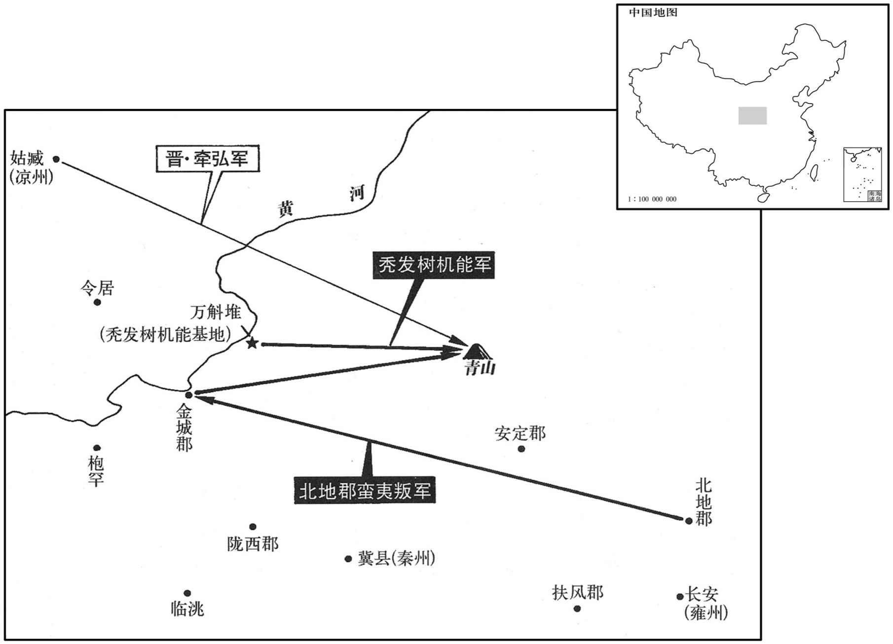

公元271年资治通鉴：本年记事、原文与白话对照
按原书编年位置阅读；追叙和史论不等于本年发生的事件。白话采用所据译本，缺译不以生成译文补齐。
卷79 · 本年记事
公元271年 · 晋世祖武皇帝泰始七年
七年〔（辛卯、二八一）〕
上传原文件年头的数字有误；按本卷年号与相邻年份定位为271年，原字保留。
本年事件索引（现代整理）

本年形势与背景参考图
春，正月，匈奴右贤王刘猛叛出塞。
春季，正月，匈奴右贤王刘猛叛逃出边塞。
豫州刺史石鉴坐击吴军虚张首级，诏曰：「鉴备大臣，吾所取信；而及下同为诈，义得尔乎！〔尔，犹言如此也。〕今遣归田里，终身不得复用。」〔复，扶又翻。〕
豫州刺史石鉴在攻打吴军时虚报俘获首级的数量，因而获罪，晋武帝下诏说：“石鉴身为大臣，我很信任他，而他却恶劣到弄虚做假，从道理上来看，怎么能如此行事呢？现在遣返他回故乡，终身不得再起用。
吴人刁玄诈增谶文曰：「黄旗紫盖，见于东南，终有天下者，荆、扬之君。」〔姓谱：刁姓，齐大夫竖刁之后。余按：竖刁安得有后！汉书货殖传有刁间。江表传曰：玄使，得司马徽论运命历数事，因诈增其文以诳吴人。见，贤遍翻。〕
吴主信之。是月晦，大举兵出华里，〔华里在建业西。〕载太笴、皇后及后宫数千人，从牛渚西上。〔水经注：牛渚在姑孰、乌江两县界中，今太平州当涂县北三十里有牛渚山，山下有牛渚矶，与和州横江渡相对。杜佑曰：牛渚圻即今当涂县采石。〕东观令华核等固谏，不听。〔东观令，典校图书及记述。观，古玩翻。华，户化翻。核，户革翻。〕行遇大雪，道涂陷坏，兵士被甲持仗，〔被，皮义翻。〕百人共引一车，寒冻殆死，皆曰：「若遇散，便当倒戈。」〔纣发兵与周武王会战于牧野，前徒倒戈攻其后，以北。〕吴主闻之，乃还。〔还，从宣翻，又如字。〕帝遣义阳王望统中军二万、骑三千屯寿春以备之。闻吴师退，乃罢。
吴人刁玄伪造谶文说：“黄色的旗帜、紫色的车盖，出现于东南方，最终得天下者，是荆、扬之地的君主。”吴主信以为真，有的最后一天，从华里大规模地出兵，车上载着太后、皇后以及后宫几千人，从牛渚向西进发。东观令华核等人坚持谏阻，吴主不听。行进途中遇到大雪，道路塌陷损毁，兵士身披铠甲，手持兵器，一百个人拉着一辆车子，天气寒冷，几乎要把人冻死，兵士们都说：“如果遇到敌兵，我们就倒弋。”吴主听到这些话，就返回了。晋武帝派遣义阳王司马望统率中军二万人、骑兵三千人驻扎在寿春以防备敌军，听到吴军退却的消息，就停止了军事行动。
三月，丙戌，巨鹿元公裴秀卒。
三月，丙戌（初七），钜鹿元公裴秀去世。
夏，四月，吴交州刺史陶璜袭九真太守董元，杀之；杨稷以其将王素代之。〔考异曰：传云：「出其不意，径至交趾。」按元乃九真太，非交趾也。华阳国志云：「元病亡，杨稷更以王素代之。」按武帝纪，「四月，九真太守董元为吴将虞汜所攻，军败，死之。」则元非病亡，盖稷虽以素代元，未至郡而元死也。〕
夏季，四月，吴国交州刺史陶璜袭击九真太守董元，将他杀死；杨稷用他的部将王素代替董元。
北地胡寇金城，凉州刺史牵弘讨之。众胡皆内叛，与树机能共围弘于青山，〔续汉志：青山在北地郡参綡县界。贤曰：青山在今庆州，有青山水。〕弘军败而死。〔考异曰：崔鸿十六国春秋秃发乌孤传云：「其先树机能本河西鲜卑，泰始中，杀秦州刺史胡烈，斩凉州刺史牵弘。」晋帝纪：「叛虏杀胡烈，北地胡杀牵弘，」皆不言鲜卑。盖言群虏内叛，则鲜卑在其中矣。或北地胡即树机能也。〕
北地胡人进犯金城，凉州刺史牵弘去征讨。内地各族胡人都叛乱，众多的胡人和秃发树机能一同在青山包围了牵弘，牵弘兵败而死。
初，大司马陈骞言于帝曰：「胡烈、牵弘皆勇而无谋，强于自用，非绥边之材也，将为国耻。」时弘为扬州刺史，多不承顺骞命，〔时骞以司马都督扬州诸军，镇寿春。〕帝以为骞与弘不协而毁之。于是征弘，既至，寻复以为凉州刺史。骞窃叹息，以为必败。二人果失羌戎之和，兵败身没，征讨连年，仅而能定，帝乃每之。
当初，大司马陈骞对晋武帝说：“胡烈、牵弘都勇而无谋，固执，自以为是，并不是安抚边地的人材，他们终将造成国家耻辱。”当时牵弘任扬州刺史，时常不顺从陈骞的命令，晋武帝认为陈骞是与牵弘不和才对他进行诽谤。于是征召牵弘，牵弘来到，不久又任命为凉州刺史。陈骞暗自叹息，认为必然失败。胡、牵两人果然丧失了与羌戎和睦的关系，兵败身死。连年出兵征讨，仅能维持表面安定，晋武帝于是后悔没听陈骞的话。
五月，立皇子宪为城阳王。
五月，立皇子司马宪为城阳王。
辛丑，义阳成王望卒。
辛丑（二十三日），义阳成王司马望去世。
侍中、尚书令、车骑将军贾充，自文帝时宠任用事，帝之为太子，充颇有力，〔事见七十七卷、七十八卷魏纪。〕故益有宠于帝。充为人巧谄，与太尉、行太子太傅荀顗、〔晋志曰：帝以储副体尊，命诸公居二傅职，以本位尊，故或行或领。顗，鱼岂翻。〕相为党友，朝野恶之。〔恶，乌路翻。〕帝问侍中裴楷以方今得失，对曰：「陛下受命，钿海承风，所以未比德于尧、舜者，但姿贾充之徒尚在朝耳。〔朝，直遥翻。〕宜引天下贤人，与弘政道，示宜示人以私。」侍中乐安任恺、河南尹颍川庾纯皆与充不协，充欲解其近职，〔近职，谓侍中。任，音壬。〕乃荐恺忠贞，宜在东宫；帝以恺为太子少傅，而侍中如故。〔晋志曰：侍中任恺，帝所亲敬，使领少傅，盖一时之制也。观此，则充欲以计捤恺。〕会树机能寇乱秦、雍，〔雍，于用翻。〕帝以为忧，恺曰：「宜得威望重臣有智略者以镇抚之。」帝曰：「谁可者﹖」恺因荐充，纯亦称之。秋，七月，癸酉，以充为都督秦、凉二州诸军事，侍中、车骑将军如故；〔考异曰：三十国春秋、晋春秋，充出并在八年二月。按武帝纪，充出在此月。盖二春秋以太子纳妃在八年二月，致此误也。〕充患之。
侍中、尚书令、车骑将军贾充，自晋文帝时就受到宠信而当权，晋武帝能成为太子，贾充起了很大作用，所以他更加受到晋武帝宠爱。贾充为人虚伪谄媚，他与太尉、行太子太傅荀，侍中、中书监荀勖，越骑校尉、安平人冯相互结为党羽，朝野上下都憎恨他们。晋武帝询问侍中裴楷当今朝政的得失，裴楷回答说：“陛下受命于天，四海承受教化，之所以德惠还未能与尧、舜相比，只因为朝廷中还有贾充之徒而已。应当召引任用天下德才兼备的人一同弘扬为政之道，不应当让天下人看到您以个人偏爱用人。”侍中、乐安人任恺，河南尹、颍川人庾纯都与贾充不和，贾充想免除任恺担任的亲近君王的职务，就向晋武帝推荐任恺，说任恺忠诚可靠，应当在东宫任职，晋武帝便让任恺担任太子少傅，而他所担任的侍中职务不变。当时，秃发树机能侵犯、骚扰秦、雍之地，晋武帝为此而忧虑。任恺说：“应当派一位有威望、有智谋才略、身居要职的大臣去安抚。”晋武帝问：“谁可以担当此任？”任恺乘机推荐贾充，庾纯也推举他。秋季，七月癸酉（二十日），晋武帝命贾充统领秦、凉州各军事，他的侍中、车骑将军职务依旧。贾充对此很忧虑。
吴大都督薛珝〔珝，况羽翻。〕与陶璜等兵十万，共攻交趾，城中粮尽援绝，为吴所陷，虏杨稷、毛炅等。璜爱炅勇建，欲活之；炅谋杀璜，璜乃杀之。修则之子允，生剖其腹，割其肝，曰：「复能作贼不﹖」〔不读曰否。〕炅犹骂曰：「恨不杀汝孙哠，汝父何狗也！」〔允父则为炅所杀，见上四年。考异曰：汉晋春秋曰：「初，霍弋遣杨稷、毛炅等戌交趾，与之誓曰：『若贼围城未百日而降者，家属诛；若过百日，救兵不至而城没者，吾受其罪。』稷等守未百日，粮尽，乞降于璜，不许，而给粮使守。诸将并谏璜曰：『霍弋已死，不能救稷等必矣，可须其日汉，然后受降，使彼得无罪，而我取有义，内训吾民，外怀邻国，不亦可乎！』稷等期讫粮尽，救兵不至，乃纳之。」华阳国志则云「稷等城破被囚，稷欧血死，炅骂贼死。」二者相戾，不可得合。而晋陶璜传兼载之。按孙暼猜暴，恐璜不敢以粮资敌。今华阳国志。〕王素欲逃归南中，吴人获之，九真、日南皆降于吴。。〔降，户江翻。〕吴大赦，以陶璜为交州牧。璜讨降夷獠，〔獠，鲁皓翻。〕州境皆平。
吴国大都督薛与陶璜等人，率十万大军一同攻打交趾，交趾城中粮尽援绝，被吴兵打破，杨稷、毛炅等人被俘。陶璜爱惜毛炅的勇健，想留他一条性命。毛炅却图谋杀陶璜，陶璜于是杀死毛炅。则的儿子允，破开毛炅的肚子，割下他的肝脏，说：“看你还能不能再做贼？”毛炅嘴里还在骂，说：“我恨不能杀了你们孙，你爹是一条死狗！”王素想逃回到南中，吴人捉住了他，九真、日南都了降了吴。吴国大赦罪人，任命陶璜为交州牧。陶璜讨伐征服了夷獠，交州疆界都予平定。
八月，丙申，城阳王宪卒。
八月丙申（十九日），城阳王司马宪去世。
分益州、南中四郡置宁州。〔宁州以建宁郡名州，统建宁、兴古、云南、永昌四郡。〕
晋朝分出益州南部、中部的四个郡，设置宁州。
九月，吴司空孟仁卒。
九月，吴国司孟仁去世。
冬，十月，丁丑朔，日有食之。〔考异曰：宋书五行志有五月庚辰食，无十月丁丑食。晋书纪及天文志有十月丁丑食，无五月庚辰食。今从晋书。〕
冬季，十月，丁丑朔（初一），出现日食。
十一月，刘猛寇并州，并州刺刘钦击破之。〔晋志：并州不以卫水为号，又不以恒为称，而云并者，以其在两谷之间也。统太原、上党、西河、乐平、鴈门、新兴。按晋志所云，以周礼并州镇曰恒山。春秋元命包曰：营室流为并州，分为卫国也。〕
十一月，刘猛侵犯并州，被并州刺史刘钦击败。
贾充将之镇，公卿饯于夕阳亭。〔贤曰：夕阳亭在河南城西。〕充私问计于荀勖，勖曰：「公为宰相，乃为一夫所制，不亦鄙乎！然是行也，辞之实难，独有结婚太子，可不辞而自留矣。」充曰：「然则孰可寄怀﹖」勖请言之。」因谓冯紞曰：「贾公远出，吾等失势；太子婚尚未定，何不劝帝维贾公之火乎！」紞亦然之。初，帝将纳卫瓘女为太子妃，充妻郭槐赂杨后左右，使后说帝求纳其女。帝曰：「卫公女有五可，贾公女有五不可：卫氏种贤而多子，美而长、白；〔五可：种贤，一也；多子，二也；美，三也；长，四也；白，五也。五不可，可以类推。说，输芮翻。种，章勇翻；下同。〕贾氏种勡而少子，丑而短、黑。」后固以为请，荀顗、荀勖、冯紞皆称充女绝美，且有才德，帝遂从之。留充复居旧任。〔为贾氏乱晋张本。〕
贾充将要赴镇守之任，公卿大臣们在夕阳亭为他饯行。贾充悄悄问 荀勖有没有什么计谋，荀勖说：“您身为宰相，却被一人所控制，难道不让人小看吗？但是此次之行，推辞掉实在很困难，只有和太子结亲，才可以不用推辞外出之任而自然地留下来。”贾说：“那么谁可以去表达我的意愿呢？”荀勖说：“请让我去说吧。”因而就对冯说：“贾公要是出远门话，我们都会失去权势，太子的婚事还没有定下来，何不劝说武帝纳娶贾公的女儿？”冯也赞同这个主意。当初，晋武帝将要纳卫的女儿做太子之妃，贾充的妻子郭槐贿赂了杨皇后身边的人，让杨皇后劝说武帝请求纳娶贾充的女儿。晋武帝说：“卫公的女儿有五可，贾公的女儿有五不可：卫氏种族优秀而且儿子多，容貌美好而且身材修长，皮肤白洁。贾氏传统妒嫉而且少子女，容貌丑陋，身材矮小，皮肤黑。”但杨皇后坚持为贾氏请求武帝，荀、荀勖、冯都称赞贾充的女儿极其美丽，而且德才兼备，晋武帝于是听从了他们的意见留下贾充仍然担任旧职。
十二月，以光禄大夫郑袤为司司空，袤固辞不受。〔袤，音茂。〕
十二月，晋任命光禄大夫郑袤为司空，郑袤坚决辞让不接受。
吴以武昌都督广陵范慎为太尉。右将军司马丁奉卒。〔据丁奉传，以救寿春之功拜左将军；诛孙綝，拜大将军，加左右都护；共迎吴主暼，迁右大司马、左军师。当书右大司马、左军师。〕
吴国任命武昌都督、广陵人范慎为太尉。右将军司马丁奉去世。
吴改明年元日凤凰。〔以西苑言凤凰集改元。〕
两版字句有差异，建议核对原文。
吴国改明年年号为凤凰。
译本中未与胡注本可靠对应的内容
以下另列供核对版本差异，不并入胡注本正文。
译本所附古文
[18]是岁，安乐思公刘禅卒。
译本白话
这一年，安乐思公刘禅去世。